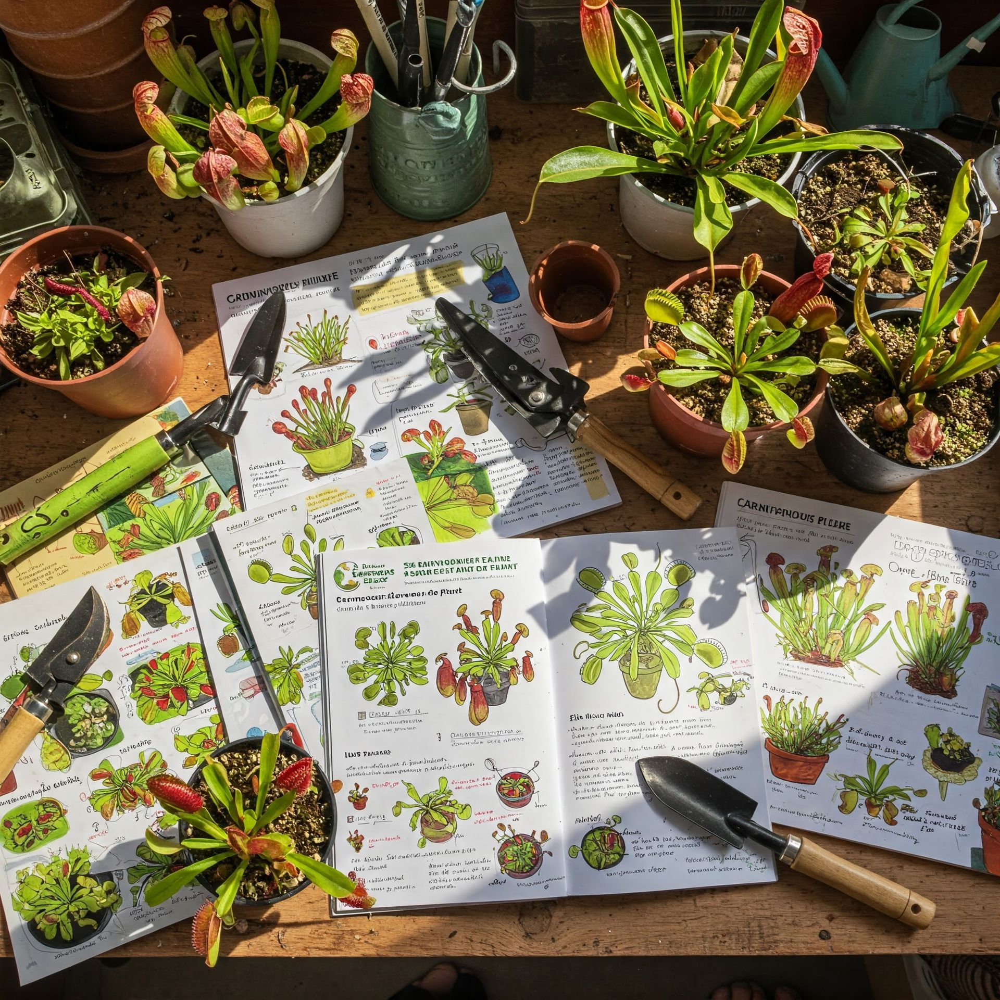
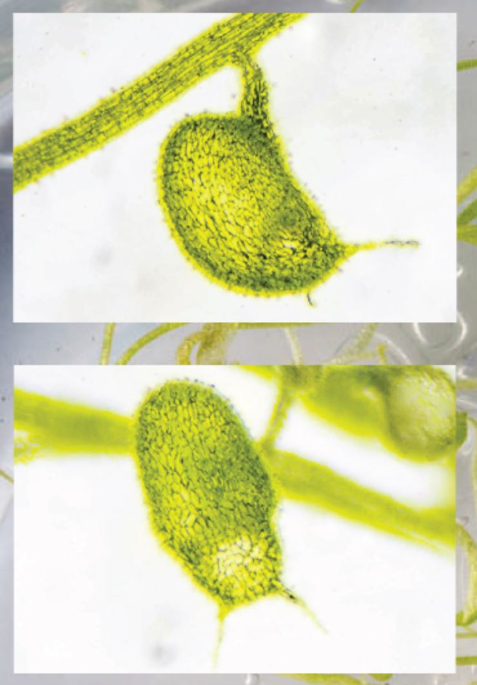
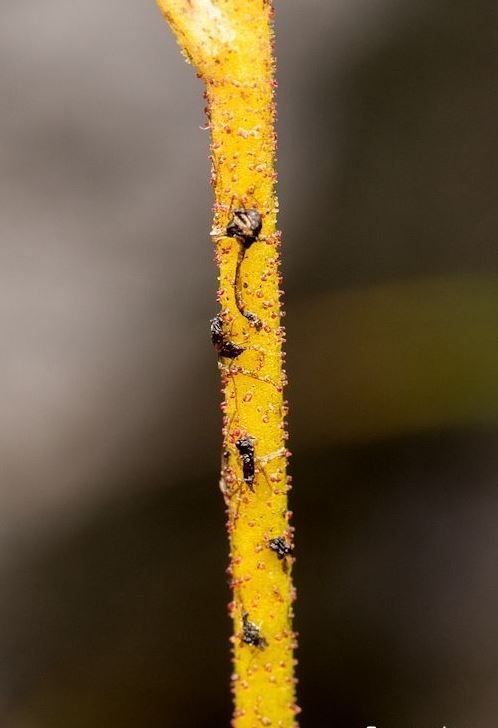

Les Gloutonnes propose des guides complets de culture de plantes carnivores avec conseils d'experts pour chaque genre: Dionaea muscipula (plante attrape-mouches), Sarracenia, Nepenthes, Drosera, Cephalotus, Darlingtonia, Pinguicula, Utricularia, Heliamphora, Stylidium et Triantha. Informations détaillées sur l'arrosage, le substrat, la luminosité, la température et la multiplication de chaque espèce.
Guides de Culture des Plantes Carnivores
Apprends à cultiver et entretenir tes plantes carnivores avec mes conseils de passionné: Dionaea, Sarracenia, Nepenthes et bien plus
Des guides complets pour toutes les plantes carnivores
Bienvenue dans la section dédiée aux guides de culture des plantes carnivores. Ici, tu trouveras des conseils pratiques et des tutoriels vidéo pour chaque genre de ma collection: Dionaea (plantes attrape-mouches), Sarracenia (plantes trompettes), Nepenthes (plantes à urnes) et bien d'autres espèces fascinantes.
Passionné depuis plus de 30 ans, je partage mon expérience à travers ces guides et sur ma chaîne YouTube pour t'aider à cultiver avec succès ces fascinantes créatures végétales.
Chaque guide comprend :
- Les bases de la culture
- Conseils d'arrosage et qualité d'eau
- Besoins en luminosité
- Températures optimales
- Alimentation et nourrissage
- Rempotage et substrat adapté

Dionaea muscipula
Plante attrape-mouche de Vénus
La Dionaea muscipula, communément appelée Attrape-mouche de Vénus, est probablement la plante carnivore la plus connue au monde. Originaire des zones humides de Caroline du Nord et du Sud aux États-Unis, cette plante fascine par son mécanisme de capture unique.
Ses feuilles modifiées en forme de pièges à charnière se referment rapidement lorsqu'un insecte touche les poils sensibles à l'intérieur. Une fois fermé, le piège sécrète des enzymes qui digèrent la proie, fournissant des nutriments essentiels à la plante.
Bases de culture
Arrosage
Eau déminéralisée uniquement (pluie, osmosée). Maintenir le substrat constamment humide mais pas détrempé en utilisant la méthode de la soucoupe.
Luminosité
Plein soleil (minimum 6h/jour) pour une bonne coloration et des pièges vigoureux. Peut être cultivée à l'extérieur ou sur un rebord de fenêtre très ensoleillé.
Substrat
Mélange acide et pauvre composé de tourbe blonde (ou sphaigne) et de perlite (ou sable siliceux) en proportions égales. Jamais de terreau ou de substrat enrichi.
Température
Tolère de 5°C à 35°C. Nécessite impérativement une période de dormance hivernale (3-5 mois) entre 5°C et 10°C pour survivre à long terme.
Tutoriel vidéo
Dans cette vidéo complète, je t'explique en détail comment cultiver et entretenir ta Dionaea muscipula. Je partage mes astuces pour obtenir des pièges colorés et vigoureux, ainsi que les erreurs à éviter pour assurer la longévité de cette plante carnivore emblématique.
Conseils supplémentaires
Dormance
La période de dormance hivernale est essentielle. Durant cette phase, la plante réduira sa croissance et pourra perdre ses pièges extérieurs. Maintient-la dans un endroit frais (5-10°C) comme un garage ou un réfrigérateur, avec un peu de lumière et un substrat à peine humide.
Multiplication
Plusieurs méthodes sont possibles : division des rhizomes au printemps, bouture de feuille (sans le piège) ou semis. Les graines nécessitent une stratification à froid (4-6 semaines au réfrigérateur) avant semis en surface sur sphaigne humide.
Nourrissage
Le nourrissage artificiel n'est pas nécessaire si la plante est placée à l'extérieur. En intérieur, tu peux nourrir un ou deux pièges par mois avec un petit insecte vivant. Évite la viande crue qui pourrait faire pourrir le piège.
Cultivars
De nombreuses variétés existent : 'B52' (grands pièges), 'Akai Ryu' (coloration rouge intense), 'Sawtooth' (dents prononcées), 'DC XL' (croissance rapide), et des formes comme 'Biohazard II' ou 'Fused Tooth' qui présentent des morphologies particulières.
Sarracenia
Plantes trompettes nord-américaines
Les Sarracenia sont des plantes carnivores indigènes des marais et tourbières d'Amérique du Nord. Elles capturent leurs proies grâce à des feuilles modifiées en forme d'urnes ou de trompettes dans lesquelles les insectes tombent et se noient.
Chaque espèce de Sarracenia possède une forme d'urne unique et des colorations distinctives. Ces plantes sont relativement faciles à cultiver en extérieur dans nos climats et développent des urnes impressionnantes avec une exposition adéquate au soleil.
Bases de culture
Arrosage
Eau déminéralisée uniquement. Soucoupe remplie d'eau pendant la croissance (mars-octobre). Réduis fortement en hiver, mais sans jamais laisser complètement sécher.
Luminosité
Plein soleil indispensable pour développer de belles urnes colorées. Idéalement en extérieur ou dans une serre très lumineuse.
Substrat
Mélange acide: 2/3 tourbe blonde ou sphaigne + 1/3 perlite ou sable siliceux. Pots profonds (minimum 15 cm) pour leur système racinaire.
Température
Très résistantes: supportent de -15°C à +35°C selon les espèces. Besoin d'une dormance hivernale de 3-4 mois (idéalement autour de 5°C).
Tutoriel vidéo
Découvre dans cette vidéo comment cultiver les différentes espèces de Sarracenia. J'y présente les meilleures techniques de culture en extérieur ainsi que les astuces pour obtenir des urnes spectaculaires et colorées.
Principales espèces de Sarracenia
Sarracenia purpurea
Urnes courtes en forme de cruche, très résistante au froid (jusqu'à -25°C). C'est l'espèce la plus septentrionale et la plus facile à cultiver en extérieur dans nos climats.
Sarracenia flava
Grandes urnes tubulaires vertes pouvant atteindre 1m de hauteur, souvent avec des veines rouges ou un "col" rouge. Spectaculaire au printemps.
Sarracenia leucophylla
Reconnaissable à ses urnes blanches dans leur partie supérieure, veinées de rouge. Produit de nouvelles urnes en automne, particulièrement décoratives.
Sarracenia psittacina
Urnes couchées ressemblant à une tête de perroquet. Piège aérien et aquatique où les insectes se noient dans un labyrinthe de poils dirigés vers l'intérieur.
Sarracenia minor
Petites urnes avec un capuchon courbé percé de "fenêtres" translucides qui attirent les insectes vers l'intérieur du piège.
Hybrides
De nombreux hybrides existent, combinant les caractéristiques de différentes espèces. Les 'Judith Hindle', 'Adrian Slack' et 'Red Bug' sont parmi les plus populaires.
Soins saisonniers
Printemps
Période de croissance active. Augmente l'arrosage dès l'apparition des nouvelles urnes. Rempote si nécessaire et effectue les divisions. C'est aussi la saison des fleurs, que tu peux polliniser pour obtenir des graines.
Été
Maintient toujours le substrat humide et protège du soleil brûlant les jours les plus chauds (>35°C). Les urnes captureront de nombreux insectes, ce qui est bénéfique pour la plante.
Automne
Certaines espèces comme S. leucophylla produisent de nouvelles urnes. Réduis progressivement l'arrosage à l'approche de l'hiver pour préparer la dormance.
Hiver
Période de dormance essentielle. Les urnes peuvent brunir et sécher, c'est normal. Garde le substrat à peine humide et protége les racines des gelées trop intenses avec un paillage ou en enterrant le pot.
Drosera
Rossolis
Les Drosera, communément appelés Rossolis, sont des plantes carnivores présentes sur presque tous les continents. Ils se caractérisent par leurs feuilles couvertes de tentacules glandulaires qui sécrètent un mucilage collant piégeant les insectes.
Ces plantes fascinantes existent sous différentes formes et tailles, des minuscules espèces pygmées aux imposants Drosera binata bifides. On distingue généralement trois grands groupes selon leur origine et leurs besoins : les tempérés (comme D. rotundifolia), les subtropicaux (comme D. capensis) et les tropicaux (comme D. adelae).
Tutoriels vidéo
Le Drosera capensis est l'une des plantes carnivores les plus faciles à cultiver. Découvrds dans cette vidéo tous les conseils pour réussir sa culture et profiter de ses magnifiques tentacules gluants.
Le Drosera rotundifolia est une espèce tempérée commune dans nos tourbières. Ce guide vous explique comment respecter son cycle naturel avec une dormance hivernale pour assurer sa pérennité.
Le Drosera filiformis se distingue par ses longues feuilles dressées couvertes de tentacules. Apprends dans cette vidéo comment cultiver cette magnifique espèce et obtenir de splendides spécimens.
Nepenthes
Népenthès
Les Nepenthes sont des plantes carnivores grimpantes originaires principalement d'Asie du Sud-Est. Elles se caractérisent par leurs pièges spectaculaires en forme d'urnes suspendues à l'extrémité de leurs feuilles, reliées par une vrille.
Ces plantes se cultivent principalement en intérieur dans nos climats et sont idéales pour égayer un rebord de fenêtre lumineux. Contrairement à d'autres plantes carnivores, de nombreuses espèces de Nepenthes s'adaptent bien aux conditions de vie d'un appartement.
Tutoriels vidéo
Découvre dans cette vidéo tous les conseils essentiels pour la culture des Nepenthes : habitat, eau, substrat, lumière, problèmes courants et solutions. Apprends également à bouturer ces plantes fascinantes pour agrandir votre collection.
Ce tutoriel spécial vous explique comment réussir la culture des Nepenthes sur un simple rebord de fenêtre. Des astuces pratiques pour adapter ces plantes tropicales aux conditions de nos intérieurs.
Cephalotus follicularis
Plante cruche d'Australie
Le Cephalotus follicularis est une plante carnivore unique originaire du sud-ouest de l'Australie. Cette espèce rare et fascinante développe de petites urnes en forme de marmites munies d'un couvercle et de dents acérées sur leur rebord.
Bien que le Cephalotus ait la réputation d'être difficile à cultiver, avec les bonnes conditions et un peu de patience, cette plante extraordinaire peut devenir une pièce maîtresse de votre collection de plantes carnivores.
Tutoriel vidéo
Dans cette vidéo complète, je partage toutes mes astuces pour réussir la culture des Cephalotus follicularis, mes plantes carnivores préférées. Découvre la méthode la plus simple pour garantir la prospérité de ces joyaux botaniques originaires d'Australie.
Darlingtonia californica
Plante Cobra
La Darlingtonia californica, également appelée plante Cobra en raison de la forme distinctive de ses pièges, est une plante carnivore native des zones montagneuses de Californie et d'Oregon. C'est la seule espèce de son genre et elle se distingue par ses urnes spectaculaires surmontées d'un "capuchon" ressemblant à la tête d'un serpent cobra.
Cette plante exceptionnelle est réputée pour être l'une des plus difficiles à cultiver parmi les plantes carnivores, principalement en raison de ses exigences très spécifiques concernant la température des racines et la qualité de l'eau.
Tutoriel vidéo
Découvre dans cette vidéo le secret principal pour réussir la culture de la Darlingtonia californica : la gestion de l'eau et de la température des racines. Des astuces pratiques pour recréer les conditions idéales pour cette plante carnivore exceptionnelle.
Pinguicula
Grassettes
Les Pinguicula, communément appelées Grassettes, sont des plantes carnivores qui capturent leurs proies grâce à leurs feuilles couvertes d'un mucilage collant. On distingue principalement deux groupes selon leur origine : les espèces mexicaines (adaptées aux climats chauds) et les espèces tempérées (adaptées aux climats plus frais).
Ces plantes discrètes mais élégantes sont parmi les plus faciles à cultiver parmi les plantes carnivores et offrent de magnifiques floraisons. Leur capacité à capturer les petits insectes nuisibles comme les moucherons en fait des plantes d'intérieur particulièrement utiles.
Tutoriels vidéo
Découvre les secrets de culture des Pinguiculas mexicaines de jardinerie comme la 'Tina', la 'Weser', la 'Guatemala' et la 'Agnata'. Des conseils pratiques pour réussir la culture de ces plantes carnivores faciles d'entretien.
Ce guide complet vous explique comment cultiver avec succès la Pinguicula grandiflora, une espèce tempérée rustique. Apprends à gérer sa dormance hivernale et à favoriser sa magnifique floraison printanière.
Utricularia
Utriculaires
Les Utricularia, ou utriculaires, sont des plantes carnivores au mécanisme de piégeage le plus sophistiqué du règne végétal. Leurs pièges microscopiques, appelés utricules, fonctionnent comme de petites vessies à déclenchement ultra-rapide qui aspirent leurs proies en moins d'un millième de seconde.
Ce genre incroyablement diversifié comprend plus de 200 espèces réparties à travers le monde et adaptées à divers habitats. On peut les classer en trois types principaux selon leur mode de vie : aquatiques, terrestres et épiphytes. Dans notre collection, nous nous concentrons particulièrement sur les espèces aquatiques rustiques qui survivent à l'hiver sous nos climats.
Types d'Utriculaires
Utriculaires Aquatiques
Ces espèces flottent librement dans l'eau ou s'ancrent légèrement dans la vase. Leurs pièges capturent principalement des micro-crustacés, larves d'insectes et protozoaires. L'Utricularia vulgaris et l'Utricularia australis sont des espèces aquatiques rustiques remarquables pour leur capacité à survivre dans les mares et étangs sous nos climats, même pendant l'hiver.
Utriculaires Terrestres
Ces espèces poussent dans des sols saturés d'eau comme les tourbières et marécages. Leurs pièges sont enterrés dans le substrat humide. Les espèces comme Utricularia bisquamata et Utricularia sandersonii sont populaires en culture pour leurs jolies fleurs.
Utriculaires Épiphytes
Ces espèces tropicales poussent sur d'autres plantes sans être parasites, souvent dans la mousse sur les troncs d'arbres. Utricularia alpina et Utricularia reniformis en sont des exemples avec leurs feuilles visibles relativement grandes.
Conseils de culture avancés pour utriculaires aquatiques
Installation en bassin
Pour un bassin de jardin, introduit simplement quelques tiges d'utriculaires dans l'eau. Elles se développeront naturellement si les conditions leur conviennent. Un bassin d'au moins 40-50 cm de profondeur permet aux plantes de survivre à l'hiver, les parties plus profondes ne gelant pas complètement.
Culture en aquarium
En aquarium, utilise une eau pauvre en minéraux et un éclairage adapté aux plantes aquatiques. Les utriculaires peuvent être maintenues flottantes ou légèrement ancrées dans un substrat neutre comme du sable. Évite les filtres trop puissants qui pourraient fragmenter les tiges.
Multiplication
La multiplication est très simple : sectionne les tiges en fragments de 10-15 cm, qui formeront chacun une nouvelle plante. En fin d'automne, récolte les hibernacles (bourgeons denses formés pour l'hivernage) pour les conserver au réfrigérateur dans l'eau ou les replanter au printemps.
Hivernage
Dans un bassin suffisamment profond, les utriculaires rustiques hivernent naturellement. Les parties végétatives se décomposent, mais les hibernacles densément formés tombent au fond et restent dormants jusqu'au printemps. Évite que le bassin ne gèle complètement.
Fertilisation
Contrairement à d'autres plantes carnivores, les utriculaires aquatiques peuvent tolérer une légère fertilisation de l'eau, similaire à celle utilisée pour les plantes d'aquarium, mais à dose très réduite (1/4 de la dose recommandée). Elles captureront naturellement les micro-organismes présents dans l'eau.
Contrôle de la croissance
Dans de bonnes conditions, les utriculaires aquatiques peuvent devenir envahissantes. Limite leur expansion en retirant périodiquement l'excédent de tiges. Dans un écosystème équilibré, leur croissance sera naturellement régulée par la disponibilité des nutriments.
La fascination des utriculaires
Les utriculaires possèdent le mécanisme de capture le plus rapide et technologiquement avancé du règne végétal. Leurs pièges microscopiques fonctionnent selon un principe d'aspiration ultra-rapide :
- La vessie (utricule) maintient une pression négative en pompant activement l'eau vers l'extérieur
- Des poils sensibles près de l'entrée servent de déclencheurs
- Lorsqu'une proie touche ces poils, une trappe s'ouvre instantanément
- La différence de pression aspire l'eau et la proie en 1/10 000 de seconde
- La trappe se referme et la digestion commence via des enzymes sécretées
Observer ces plantes dans un bassin ou un aquarium, c'est accueillir un prédateur microscopique fascinant qui contribue à l'équilibre de l'écosystème aquatique en contrôlant les populations de micro-organismes.

Vue microscopique d'un utricule d'Utricularia montrant son mécanisme de piégeage sophistiqué
Heliamphora
Plantes à trompette des Tepuis
Les Heliamphora sont des plantes carnivores originaires des hauts plateaux (tepuis) du Venezuela, du Guyana et du nord du Brésil. Ces plantes rares et majestueuses sont considérées comme les ancêtres des plantes à urnes et présentent une forme plus primitive de piège.
Contrairement aux Sarracenia ou aux Nepenthes, les urnes des Heliamphora possèdent une simple échancrure de débordement au lieu d'un opercule, et produisent leur propre nectar attractif via une glande nectarifère appelée "cuillère". Leur culture est réputée difficile car elle nécessite de reproduire les conditions particulières des tepuis.
Les Heliamphora en bref
Les Heliamphora sont parmi les plantes carnivores les plus fascinantes mais aussi les plus exigeantes. Natives des tepuis d'Amérique du Sud, ces plateaux isolés aux conditions climatiques uniques, elles requièrent une attention particulière :
- Une humidité ambiante constamment élevée est indispensable
- La culture en terrarium ou sous cloche est souvent nécessaire
- Elles apprécient une bonne ventilation malgré le besoin d'humidité
- Les cultivars et hybrides sont généralement plus faciles que les espèces pures
- La multiplication s'effectue par division des rejets ou par graines
Pour les collectionneurs avancés, ces plantes offrent une récompense incroyable lorsqu'elles sont bien cultivées, avec leurs urnes élégantes aux couleurs souvent vives et leurs délicates fleurs blanches.
Stylidium
Plantes à colonne stylaire
Les Stylidium sont des plantes fascinantes originaires principalement d'Australie et considérées comme "protocarnivores" ou "paracarnivores". Bien qu'elles ne soient pas strictement carnivores, elles possèdent des poils glandulaires qui piègent de petits insectes et peuvent absorber certains nutriments de ces proies.
Ces plantes sont surtout connues pour leur incroyable mécanisme de pollinisation : une colonne sensible qui se déclenche comme un ressort pour frapper les insectes pollinisateurs. Ce mécanisme rapide et fascinant a valu aux Stylidium le surnom de "plantes gâchette" (trigger plants).
Les Stylidium en bref
Les Stylidium constituent une famille de plantes fascinantes à la frontière du monde des plantes carnivores. Bien qu'elles ne digèrent pas activement leurs proies comme les véritables plantes carnivores, elles captent des nutriments grâce à leurs poils glandulaires collants.
Pour les cultiver avec succès :
- Offre-leur beaucoup de lumière pour encourager la floraison
- Utilise un pot plus profond que large pour leurs longues racines
- Ne craind pas de les laisser légèrement sécher entre les arrosages
- Observe leur incroyable mécanisme de colonne qui se déclenche instantanément au toucher
- Multiplie-les par graines ou division des touffes pour les espèces formant des rosettes
Ces plantes ajoutent une dimension unique à une collection de plantes carnivores grâce à leur mécanisme de pollinisation spectaculaire et leurs jolies fleurs colorées qui apparaissent généralement au printemps ou en été.
Triantha occidentalis
Lis des marais occidental
La Triantha occidentalis est une fascinante plante récemment reconnue comme protocarnivore. Native des zones humides de la côte ouest de l'Amérique du Nord, cette membre de la famille des Tofieldiaceae attire l'attention par ses tiges florales recouvertes de poils glandulaires collants qui piègent et absorbent les nutriments de petits insectes.
Contrairement aux plantes carnivores classiques, la Triantha ne piège pas les insectes pour obtenir de l'énergie, mais plutôt pour extraire des nutriments spécifiques comme l'azote et le phosphore. Sa découverte relativement récente (2021) comme plante protocarnivore en fait un ajout unique et passionnant pour les collectionneurs de plantes carnivores.
Caractéristiques particulières
La Triantha occidentalis présente plusieurs caractéristiques distinctives qui en font une plante fascinante tant pour les botanistes que pour les collectionneurs :
Mécanisme de piégeage innovant
Contrairement aux autres plantes carnivores, la Triantha produit ses poils glandulaires uniquement sur sa tige florale, et non sur ses feuilles. Cette adaptation lui permet de piéger les petits insectes sans risquer de capturer ses pollinisateurs, généralement plus gros.
Cycle de vie
Plante vivace qui émerge au printemps, fleurit en été avec de délicates fleurs blanches à roses, puis entre en dormance en hiver. Le développement des tiges glandulaires coincide avec la période de floraison.
Statut protocarnivore
Des recherches récentes ont démontré que la Triantha possède des enzymes digestives et peut absorber l'azote des insectes capturés, mais son système est moins spécialisé que celui des plantes carnivores "classiques".

Gros plan sur les tiges glandulaires de Triantha occidentalis capturant de petits insectes
Notes de culture et défis
Propagation
La multiplication se fait principalement par division des touffes au début du printemps. Le semis est possible mais délicat, nécessitant une stratification à froid et une patience considérable, les graines pouvant prendre jusqu'à deux ans pour germer.
Dormance
Une période de repos hivernal avec des températures plus fraîches (5-10°C) est nécessaire pour stimuler la floraison l'année suivante. Pendant cette période, réduis l'arrosage mais ne laisse jamais le substrat sécher complètement.
Difficultés
La Triantha peut être sensible aux excès d'eau stagnante qui provoquent la pourriture des racines. Un bon drainage est essentiel malgré son besoin d'humidité constante. Évite également les engrais conventionnels qui peuvent endommager la plante.
Alimentation
Contrairement aux plantes carnivores classiques, le nourrissage artificiel n'est pas nécessaire. Si cultivée à l'extérieur, elle capturera naturellement de petits insectes pendant sa période de floraison. En culture d'intérieur, elle peut bénéficier d'une fertilisation très légère et occasionnelle.
Statut de conservation et éthique de collection
La Triantha occidentalis n'est pas classée comme menacée, mais ses habitats naturels (zones humides et tourbières) sont en déclin. Les spécimens en collection proviennent principalement de multiplication en culture plutôt que de prélèvements sauvages.
En tant que collectionneurs responsables, j'encourage :
- L'achat de plantes auprès de vendeurs spécialisés pratiquant la multiplication durable
- Le partage et l'échange de divisions avec d'autres passionnés
- La documentation et le partage des connaissances sur cette espèce fascinante
La culture de cette plante contribue à la conservation ex-situ d'une espèce botanique remarquable qui élargit notre compréhension de l'évolution des mécanismes carnivores dans le règne végétal.